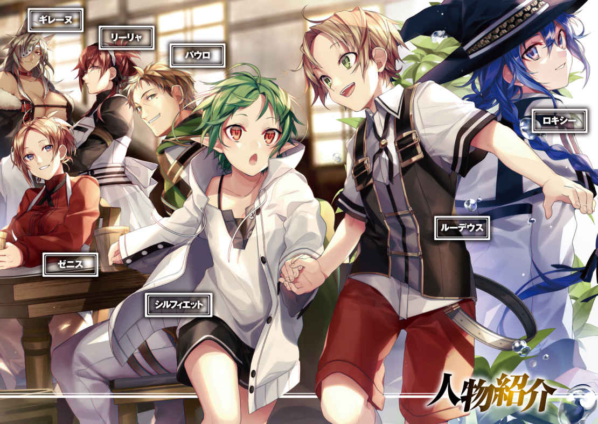
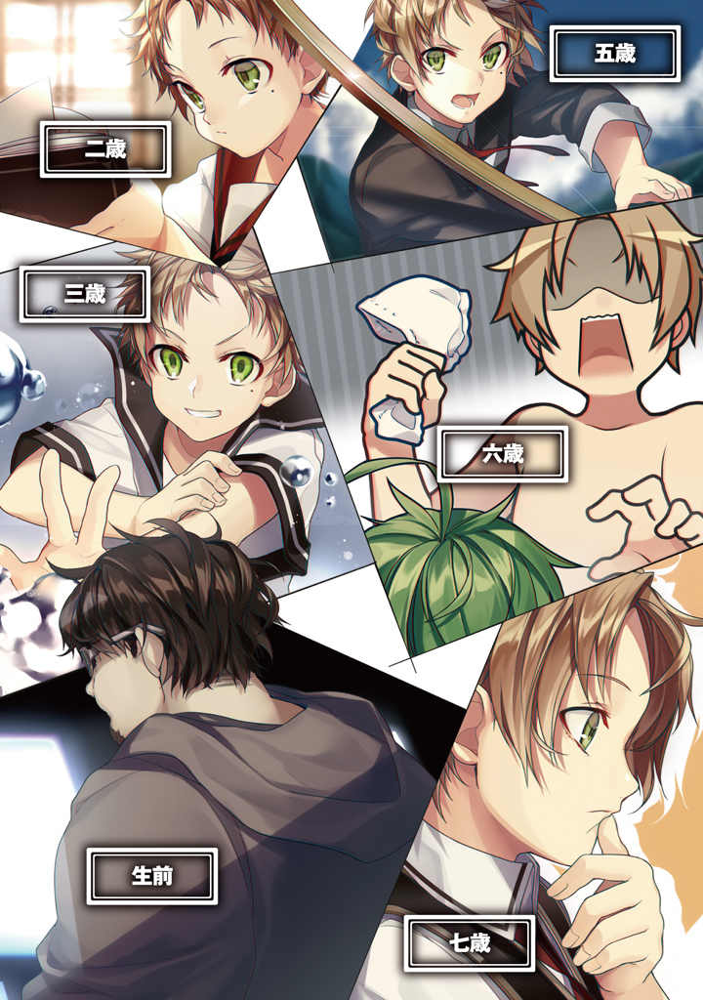

Volume 1 · Unofficial AI-assisted fan translation
Opening illustrations
Character introductions

- Ghislainetop left box, over the wolf-eared woman
- Lilyatop box, over the red-haired woman in profile
- Paulotop center box, over the grinning man
- Roxyright box, beside the blue-haired girl in the hat
- Rudeuscenter right box, on the boy's vest
- Zenithleft box, by the woman at the table
- Sylphiettecenter box, under the green-haired child
- Charactersbottom right, large page title
Age timeline

- Age 2top left box
- Age 5top right box
- Age 3upper left box
- Age 6middle right box
- Before deathbottom left box, over the man in the hoodie
- Age 7bottom right box